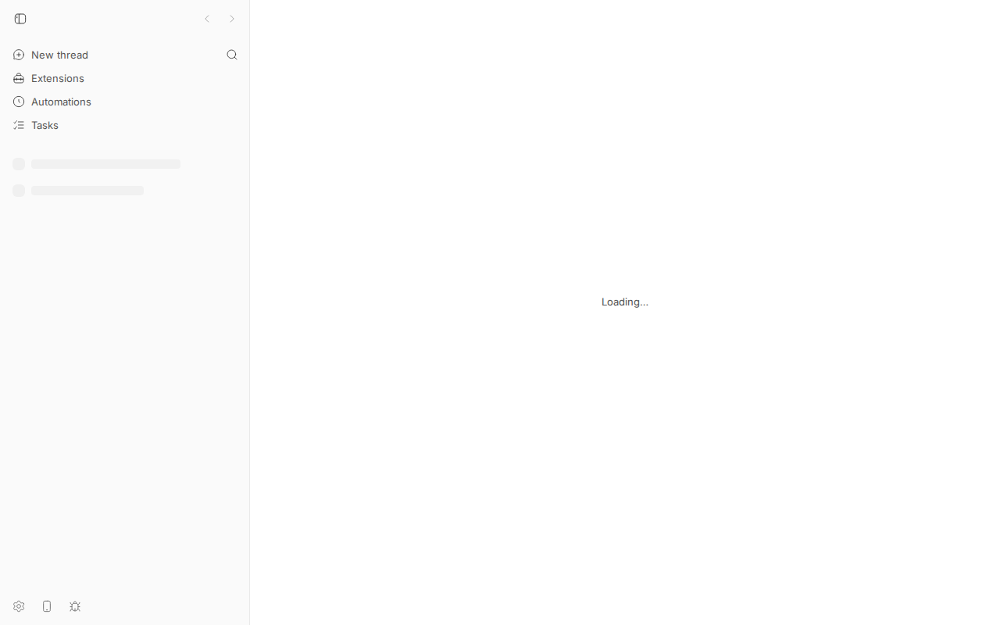
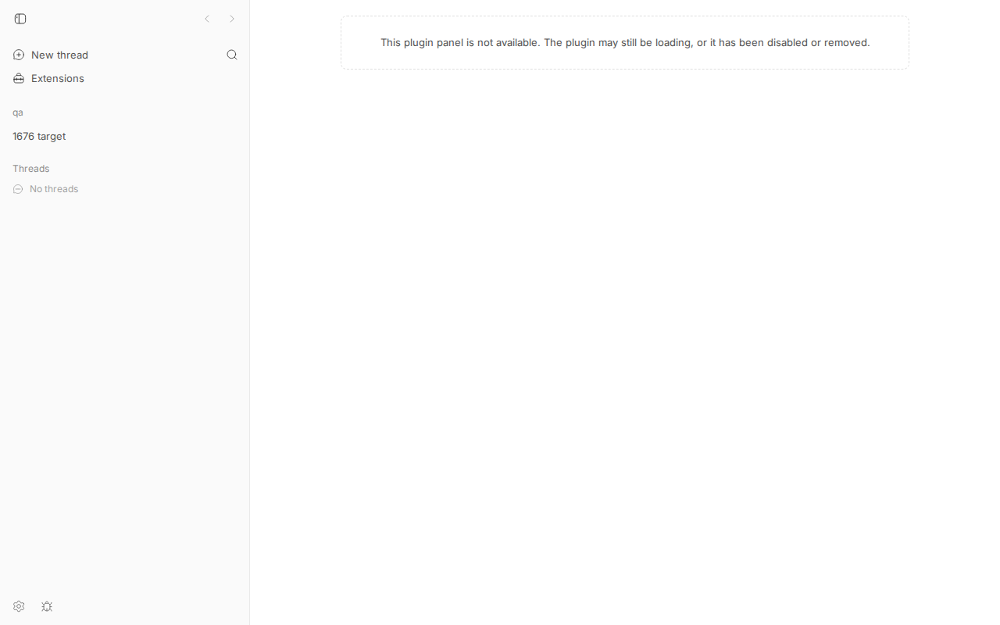
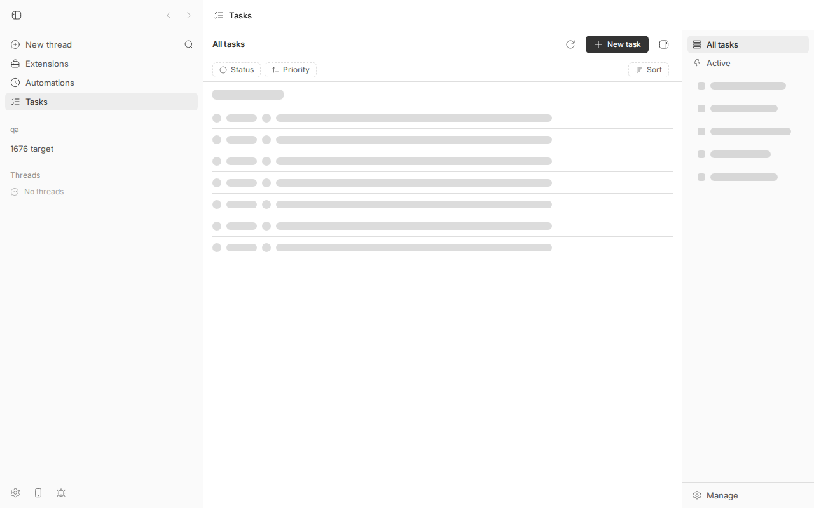
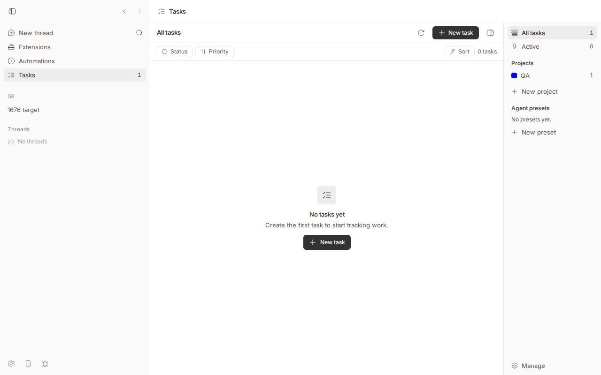
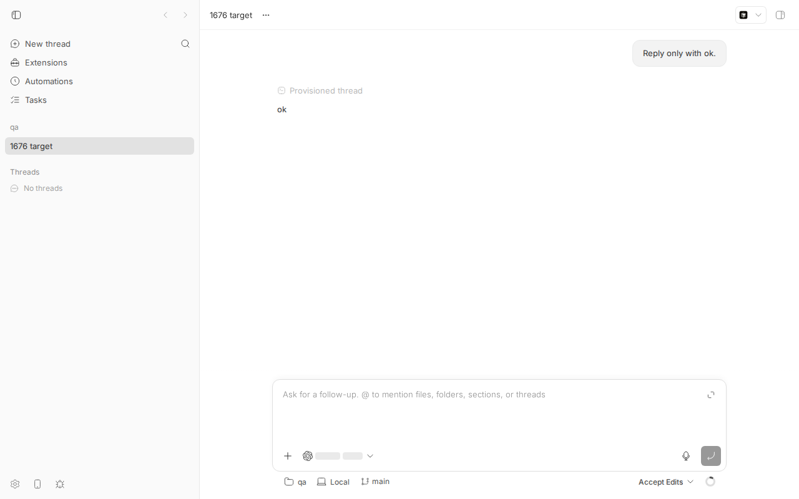
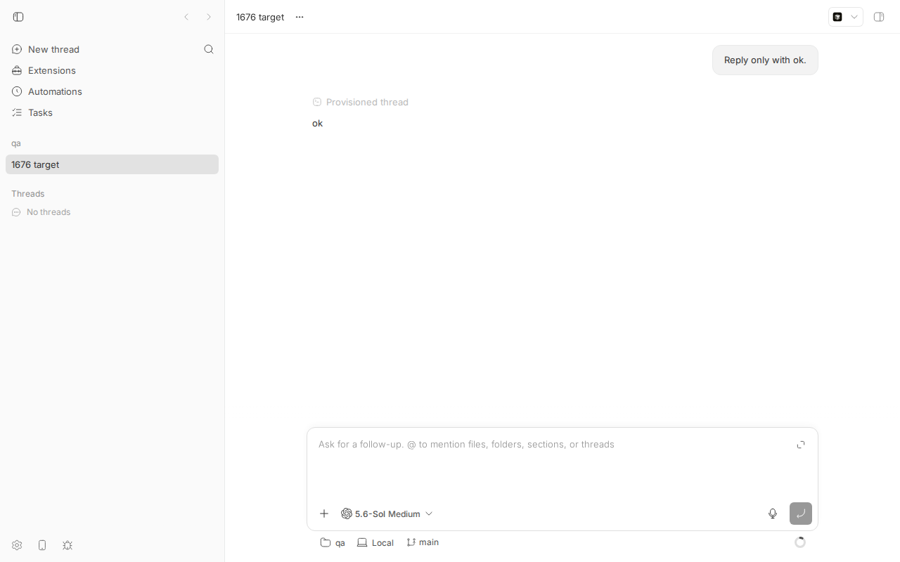
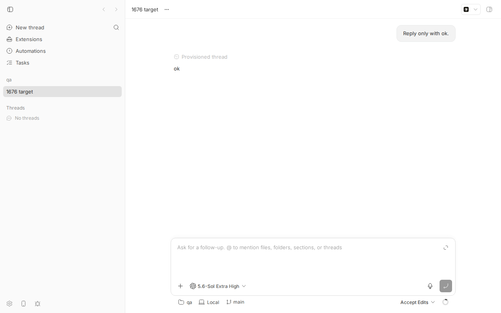

#1676 · Reload flashes: Tasks empty state, plugin route chrome, composer model and reasoning
TL;DR
Plain-language framing. The bb web app is a single-page app. On a full page load (reload, deep link, desktop cold start) every piece of data starts out unknown and arrives over the next few hundred milliseconds to seconds: the sidebar's project/thread list (GET /api/v1/sidebar-bootstrap), the list of provider models the composer can offer (GET /api/v1/system/execution-options, which asks the host daemon and can take seconds), a thread's remembered model/reasoning/permission settings (GET /api/v1/threads/:id/default-execution-options), and the plugin frontends (Tasks, Automations) which are only downloaded and registered after GET /api/v1/system/config resolves. Every surface that reads one of these paints a "nothing yet" state first and then swaps to the real answer.
The reporter lists six such flashes. I reproduced all six on a headless Chromium against a dev instance at the base commit, using an 8 ms DOM sampler injected right after navigation commit and, to make the windows wide enough to screenshot, a Vite dev-server middleware that delays one API request by a few seconds. Natural (undelayed) windows on my machine: sidebar skeleton ~70 ms; "This plugin panel is not available" ~250 ms on /plugins/tasks/tasks; header title and sidebar plugin rows blank for ~800 ms after the rest of the sidebar; Tasks list chrome + skeleton rows ~30 ms before "No projects yet"; "Loading models..." ~500 ms (twice on the root composer, once per query-key change); and, when the thread's default-options request lands after the model catalog, reasoning "Medium" until it snaps to "Extra High".
Root causes are simple and each is a one-liner in code: (1) Tasks' useTasksQuery starts every mount at data: undefined and keeps the previous view's data across a view change, and the list body renders "No tasks yet" from whatever data it holds; (2) PluginPanelView renders the not-available copy whenever navPanels.find(...) is null, with no notion of "plugins have not booted yet"; (3) header title and sidebar plugin rows are derived only from live registrations; (4) the localStorage catalog placeholder is written and read only for claude-code, and every other provider gets an empty models: [] placeholder, which useThreadCreationOptions reports as isLoadingModels; (5) useThreadDefaultExecutionOptions has no placeholderData, so the composer seeds from undefined and the picker shows the catalog default; (6) useSidebarNavigation has no placeholderData, so the rail shows SidebarMenuSkeleton until the bootstrap arrives. None of this is a data-loss or correctness bug; it is first-paint polish, hence the Low priority. Nothing on origin/main after the base commit touches these paths.
Claims vs findings
| Claim (issue item) | Status | Evidence |
|---|---|---|
| 1a. Tasks mounts with list layout + skeleton rows, then swaps to "No projects yet" (~450 ms on reporter's instance) | Verified | DOM probe on /plugins/tasks/tasks: skeleton (39 .animate-pulse nodes) at 1904 ms, "No projects yet" at 1935 ms (~30 ms here; local RPC is fast). Screenshot tasks-skeleton-before-empty (window widened by delaying the plugin RPCs). Code: useTasksQuery starts at data: undefined; noProjects needs a resolved []. |
| 1b. Returning from an empty Active to All paints "No tasks yet" for the length of the refetch | Verified | With one task in a project: click Active → "No agents working right now"; click All tasks → heading "All tasks", sidebar count 1, body "0 tasks / No tasks yet" until the refetch lands. Screenshot tasks-all-shows-active-empty. Code: ListView body switches on displayTasks.length === 0 using the previous scope's data. |
| 1c. Populated instances get the same skeleton-then-rows flash on every visit | Verified | Every mount starts from undefined; the plugin's query primitive has no cache. Also visible on PR #1677 for the list body (29 pulse nodes) — the PR only snapshots the sidebar data. |
| 2. Reloading a plugin page shows "This plugin panel is not available…" for a few hundred ms | Verified | Probe: message from 1663 ms to 1904 ms on a natural reload; from 2758 ms to 7989 ms with the plugin inventory delayed 5 s. Screenshot plugin-route-not-available. Repro test issue-1676-plugin-panel-route-before-boot.test.tsx fails on main. |
| 3. Header title + sidebar Automations/Tasks rows + split-pane titles paint empty, then pop in | Verified (header, sidebar rows) | Probe: sidebar project rows at ~865 ms, "Automations" row at 1684 ms, "Tasks" row at 1738 ms, header title Tasks only once the panel registers (1904 ms). Same screenshot as item 2 shows the header center and plugin rows blank. Split-pane title not exercised separately (same navPanels.find source in SplitThreadArea.tsx). |
| 4. "Loading models..." for seconds on every full load; the placeholder catalog is Claude Code only | Verified | Code: writeCachedClaudeModelCatalog is gated on isClaudeCode; non-Claude built-in providers get models: [] placeholder → isLoadingModels. Probe with codex: "Loading models" 1840→2387 ms and again 2784→2982 ms on the root composer; 1834→2361 ms on the thread composer. Screenshot thread-loading-models. The "2–5 s" duration is the reporter's host; on mine the request took ~500 ms (I widened it to 5 s to screenshot). |
| 5. Thread composer shows the model default reasoning (e.g. "Medium") and then snaps to the thread's setting ("Extra High") | Verified | Thread spawned with --reasoning-level xhigh. With default-execution-options delayed 5 s: "5.6-Sol Medium" at 2895 ms → "5.6-Sol Extra High" at 7260 ms. Screenshots before / after. Only visible when the catalog resolves before the thread options (ordering-dependent; on an undelayed load here the catalog was slower so the composer went straight from "Loading models" to "Extra High"). |
| 6. Sidebar paints a two-row loading skeleton on every full load | Verified | Probe: 4 .animate-pulse nodes (two SidebarMenuSkeleton) from 792 ms to 865 ms on a natural reload. Screenshot sidebar-skeleton (bootstrap delayed 5 s; note the root composer also sits on "Loading…" while the bootstrap is pending). |
| Reporter's timing numbers (Tasks empty at ~450 ms, root composer 6.9 s cold, etc.) | Unverified as numbers | Instance-dependent. My windows are shorter (fast local host); the mechanism is identical. |
"No server, daemon, or contract wire files change, so no HOST_DAEMON_PROTOCOL_VERSION bump" (for the prototypes) | Verified | Both PR diffs touch only plugins/tasks (#1677) and apps/app (#1678). Correct per AGENTS.md. |
{kind=link}
{kind=link}
{kind=link}
{kind=link}
{kind=link}
{kind=link}
{kind=link}
Environment
- bb
16ceb3a54(main, 2026-08-18), worktree/home/sawyer/projects/bb/.claude/worktrees/wf_242c3e11-a10-39. Nothing onorigin/mainafter the base touches the files named below (git log 16ceb3a54..origin/main -- <paths>is empty). - Linux 7.0.0-29-generic, node v24.18.0, codex-cli 0.147.0 (provider
codex, model gpt-5.6-sol), headless Chromium viadev-browser(Playwright), viewport 1280×800. - Dev instance (
scripts/bb-dev-app current): app:14740(Vite dev server, proxies/apito the server), server:22740, host daemon:30740, data dir/home/sawyer/.bb-dev/projects-bb-.claude-worktrees-wf_242c3e11-a10-39-3552d05c5d86. Hosthost_s4y6tsp2bk("bee"). - Project
proj_z9ifuz29d6(local path/tmp/1676-qa), threadthr_7emyumtvyz(codex,--reasoning-level xhigh, title "1676 target"). Tasks plugin installed withbb plugin install builtin:tasks --yes; for item 1b a tracker projectQAwith one taskQA-1. - Instrumentation (worktree only, reverted afterwards): qa-delay-vite-plugin.patch adds a Vite
configureServermiddleware toapps/app/vite.dev.config.tsthat reads/tmp/bb-reports/issues/1676/repro/delay.json({"match":"<url substring>","ms":N}) on every request and delays matching requests. Vite hot-reloads its config, so no restart is needed. This is how the screenshot windows were widened; the natural timings come from undelayed runs.
Minimal reproduction
All scripts are in 1676/repro/. bb below means BB_SERVER_URL=http://localhost:22740 node packages/scripts/dist/commands/run-cli.js from the worktree root.
- Build and start:
pnpm install --frozen-lockfile --prefer-offline && pnpm exec turbo run build && scripts/bb-dev-app current. Note App/Server ports (mine: 14740/22740). - Data:
mkdir -p /tmp/1676-qa && echo hi > /tmp/1676-qa/README.md && git -C /tmp/1676-qa init -q && git -C /tmp/1676-qa add . && git -C /tmp/1676-qa -c user.email=a@b -c user.name=qa commit -qm init curl -s -X POST http://localhost:22740/api/v1/projects -H 'content-type: application/json' \ -d '{"name":"qa","source":{"type":"local_path","path":"/tmp/1676-qa","hostId":"host_s4y6tsp2bk"}}' # hostId from `bb machine list --json` bb thread spawn --project proj_z9ifuz29d6 --machine bee --provider codex --permission-mode accept-edits --reasoning-level xhigh --title "1676 target" --prompt "Reply only with ok." --json bb plugin install builtin:tasks --yes bb tasks project create --name QA --prefix QA --json && bb tasks create --project QA --title "First task" --json # for item 1b only - Warm the browser once (so any client-side caches that exist on main are populated):
dev-browser --headless run 1676/repro/db-warm.js(db-warm.js). - Run the DOM probe (db-probe.js) against a URL. Inputs live in
~/.dev-browser/tmp/:probe-url.txt(URL),probe-shot.txt(screenshot name prefix), optionalprobe-times.txt(comma-separated ms after navigation at which to screenshot). It navigates withwaitUntil: "commit", immediately installs asetInterval(sample, 8)sampler (before the Vite module graph has painted anything:#roothas 0 children at that point), then prints every transition of: number of.animate-pulsenodes, the header titlep.truncate.text-sm.font-semibold, a marker list (No projects yet,This plugin panel is not available,Loading models,Extra High,Medium, sidebar rowsTasks/Automations, …) and the first 120 chars of<main>. Summarize with summarize-probe.py. All raw outputs: probe-summaries.txt.
Item 6 + item 4 (root page, natural reload, no delay)
$ printf 'http://localhost:14740/' > ~/.dev-browser/tmp/probe-url.txt; dev-browser --headless run db-probe.js | python3 summarize-probe.py probe installed at 132.6 ms; root children: 0 141 ms pulse=0 [] # blank 792 ms pulse=4 [] # sidebar: two SidebarMenuSkeleton rows (item 6) 865 ms pulse=0 ['1676 target'] # sidebar-bootstrap landed: project + thread rows 1684 ms pulse=0 ['1676 target', 'Automations'] # plugin frontends booted: Automations row pops in (item 3) 1738 ms pulse=0 ['1676 target', 'Tasks', 'Automations'] # Tasks row pops in (item 3) 1840 ms pulse=2 ['Loading models', …] # root composer: "Loading models..." (item 4) 2387 ms pulse=0 [ … ] # execution-options landed → "5.6-Sol Medium" 2784 ms pulse=2 ['Loading models', …] # second "Loading models..." (query key changed) (item 4) 2982 ms pulse=0 [ … ]
Expected (issue): a profile that has seen this rail and this provider before paints them immediately. Actual: 73 ms of skeleton, ~800 ms without plugin rows, two "Loading models..." windows totalling ~750 ms, on every full load.

/api/v1/sidebar-bootstrap by 5 s (delay.json = {"match":"/api/v1/sidebar-bootstrap","ms":5000}). Look at the two grey pulse rows under the plugin rows on the left, and note that the root composer is also stuck on "Loading…" because it waits for the same bootstrap. Settled state for comparison: home-settled.Items 2, 3, 1a (Tasks deep link /plugins/tasks/tasks)
$ printf 'http://localhost:14740/plugins/tasks/tasks' > ~/.dev-browser/tmp/probe-url.txt; dev-browser --headless run db-probe.js | python3 summarize-probe.py
probe installed at 65 ms; root children: 0
74 ms pulse=0 header='' []
867 ms pulse=4 header='' [] # sidebar skeleton (item 6)
933 ms pulse=0 header='' ['1676 target']
1663 ms pulse=0 header='' ['This plugin panel is not available', …] main='This plugin panel is not available. The plugin may still be loading, or it has been disabled or removed.' # item 2; header still empty (item 3)
1716 ms pulse=0 header='' [ …, 'Automations', …] # Automations row pops in
1904 ms pulse=39 header='Tasks' ['1676 target', 'Tasks', 'Automations'] main='Tasks All tasks Active Manage All tasks New task Status Priority Sort' # Tasks registered: list chrome + skeleton rows (item 1a)
1935 ms pulse=0 header='Tasks' ['No projects yet', …] # listProjects resolved []: empty state
Expected: a valid deep link stays quiet while registration is pending; host chrome (title, rows) is stable from first paint; a repeat visit paints the last resolved Tasks state. Actual: 240 ms of "not available", header/rows blank until 1904 ms, list chrome + 39 skeleton nodes before "No projects yet".

/api/v1/plugins delayed 5 s so it can be photographed; taken at page time 6038 ms). Look at: the dashed "This plugin panel is not available…" panel; the empty header center where "Tasks" belongs; the sidebar has no Automations/Tasks rows yet.
Item 1b (Active → All tasks shows Active's emptiness as "No tasks yet")
Script db-tasks-views.js, with delay.json = {"match":"rpc/listTasks","ms":3000} to widen the refetch. Output (tasks-views.out):
ALL (settled): … All tasks New task Status Priority Sort 1 task Backlog 1 QA
ACTIVE (settled): … Active agents working now New task Status Priority Sort 0 t…
[click "All tasks"]
8 ms … Active agents working now … 0 t # still Active
5124 ms … All tasks New task Status Priority Sort 0 tasks No tasks ye… # All heading, but Active's empty result → "No tasks yet"
8169 ms … All tasks … 1 task Backlog 1 QA # All's own fetch lands

Items 4 and 5 (thread page /projects/proj_z9ifuz29d6/threads/thr_7emyumtvyz)
# natural reload
1834 ms pulse=2 ['Loading models', 'Reply only with ok', '1676 target', 'Automations'] # item 4 on the thread composer
2361 ms pulse=0 ['Extra High', '5.6-Sol', …] # both queries landed; catalog was the slower one here
# default-execution-options delayed 5 s (delay.json = {"match":"/default-execution-options","ms":5000})
2226 ms pulse=2 ['Loading models', …]
2895 ms pulse=0 ['5.6-Sol', 'Medium', …] main='… 5.6-Sol Medium Project: qa …' # item 5: catalog default reasoning
7260 ms pulse=0 ['Extra High', '5.6-Sol', …] main='… 5.6-Sol Extra High Project: qa …' # snaps to the thread's setting

system/execution-options delayed 5 s, page time 4572 ms): the composer's model control shows the codex icon plus two skeleton pills; its accessible label is "Loading models...". Everything else on the page has painted. Settled: thread-settled-xhigh.

default-execution-options resolves (page time 12346 ms). No user action in between.Unit-level repro (item 2)
issue-1676-plugin-panel-route-before-boot.test.tsx: copy to apps/app/src/components/plugin/ and run cd apps/app && pnpm exec vitest run src/components/plugin/issue-1676-plugin-panel-route-before-boot.test.tsx. It encodes the expected behaviour and fails on main because the not-available copy is rendered synchronously on the first render with an empty registration store (output: .test.out).
// @vitest-environment jsdom
import { MemoryRouter, Route, Routes } from "react-router-dom";
import { cleanup, render, screen } from "@testing-library/react";
import { afterEach, describe, expect, it } from "vitest";
import { resetPluginSlotStoreForTest } from "@/lib/plugin-slots";
import { PLUGIN_PANEL_ROUTE_PATH } from "@/lib/route-paths";
import { PluginPanelView } from "@/views/PluginPanelView";
afterEach(() => { cleanup(); resetPluginSlotStoreForTest(); });
describe("issue #1676: plugin panel deep link before plugin frontends boot", () => {
it("does not announce 'not available' while no plugin frontend has registered yet", () => {
render(
<MemoryRouter initialEntries={["/plugins/tasks/tasks"]}>
<Routes><Route path={PLUGIN_PANEL_ROUTE_PATH} element={<PluginPanelView />} /></Routes>
</MemoryRouter>,
);
expect(screen.queryByText(/This plugin panel is not available/)).toBeNull();
});
});
AssertionError: expected <div …(1)></div> to be null + Received: <div class="border border-dashed border-border text-center text-muted-foreground rounded-lg p-6 text-sm"> This plugin panel is not available. The plugin may still be loading, or it has been disabled or removed. </div> Test Files 1 failed (1)
Root cause
Six independent "first paint from unknown" gaps. Each is confirmed both by code reading and by the probe timeline above.
1. Tasks (plugin code)
useTasksQuery is a fetch-and-subscribe primitive whose state starts at { data: undefined, isLoading: true } on every mount and is never persisted (data.ts#L91-L108). When deps change (view switch), refresh is re-created and the effect refetches, but state.data keeps the previous deps' result until the new fetch resolves (data.ts#L109-L145).
- 1a: the shell shows
NoProjectsEmptyStateonly whenprojects.data !== undefined && projects.data.length === 0(app-shell.tsx#L264); the sidebar skeleton isisLoading={projects.isLoading || summaries.isLoading}(#L301). "Unknown" therefore renders as the populated layout with skeletons. - 1b:
ListViewpicks the body fromtasksQuery.data:undefined→LoadingRows, elsedisplayTasks.length === 0→ "No tasks yet" (list/index.tsx#L225-L275). Because the hook holds Active's[]while All refetches, the All view claims emptiness. Notably the same file already computes ascopeChangedflag for scroll restoration (#L208-L222) but does not use it for the body.
2. Plugin panel route
PluginPanelView looks the panel up in the live registration store and renders the not-available copy when the lookup is null (PluginPanelView.tsx#L57-L73). Registrations only exist after bootPluginFrontends(), which is gated on the system-config query (usePluginFrontendBoot.ts#L13-L19) and then downloads and evaluates each bundle. The component's own comment acknowledges the deep-link case but chose the message anyway.
3. Header title, sidebar plugin rows, split-pane titles
All three derive from usePluginSlots().navPanels: AppLayout.tsx#L511-L526 (header center is PluginPanelHeaderCenter only when the live panel is found), PluginNavSidebarItems.tsx#L129-L140, SplitThreadArea.tsx#L1024-L1043. Nothing remembers host-owned chrome across loads.
4. "Loading models..." / Claude-only catalog placeholder
useSystemExecutionOptions writes the localStorage catalog only for Claude Code (system-queries.ts#L440-L446) and reads it only for Claude Code (#L249-L259). Other built-in providers get builtInProviderPlaceholderExecutionOptions() with models: [] (#L226-L234); providers not in PLACEHOLDER_PROVIDER_INFOS get no placeholder at all (#L416-L418). useThreadCreationOptions then reports isLoadingModels whenever the data is placeholder with zero models (useThreadCreationOptions.ts#L317-L321), and ModelReasoningPicker renders "Loading models..." (ModelReasoningPicker.tsx#L347-L349). The double flash on the root composer is the query key changing (provider/routing resolved after mount) so a second cold key gets a fresh placeholder.
5. Thread composer reasoning snap
useThreadDefaultExecutionOptions is a plain useQuery with no placeholderData (thread-default-execution-options-query.ts#L35-L55). ThreadDetailPromptArea seeds the composer with initialModel/initialReasoningLevel/… = defaultExecutionOptions?.x (ThreadDetailPromptArea.tsx#L577-L590), i.e. undefined until the query lands, so the picker shows the catalog default; syncUntouchedThreadPromptSelections later updates the untouched fields, which is the visible snap.
6. Sidebar skeleton
useSidebarNavigation has no placeholderData (sidebar-navigation-query.ts#L36-L49); ProjectListProjects renders two SidebarMenuSkeletons while status === "loading" (ProjectListProjects.tsx#L130-L134). The root composer also blocks on the same query ("Loading…" in the screenshot).
Incidental observation (not in the issue). On a thread-page reload the probe once recorded "This plugin panel is not available" in <main> for ~270 ms (probe-thread-loading-models, 1625→1898 ms) before the thread view painted; the same route rendered without it on other runs. I did not chase it (possibly a persisted pane layout resolving before the route); worth a look when item 2 is fixed since a quiet shell would hide it too.
Proposed fix (first principles)
The issue's own prototypes (PRs below) are directionally right: keep a validated last-known copy client-side and replay it as provisional data. From first principles I would shape it as follows, in decreasing order of value-per-line:
- Item 2 (smallest, safest, clearest win): add a "plugin frontends settled" flag set in
bootPluginFrontends()'sfinally(plus a floor timeout for the backend-down case) and havePluginPanelViewrender an emptyPageShelluntil it is set. This is what #1678 does; it could be its own tiny PR. - Item 1b: in
ListView, treat a changed route scope (projectId/activeOnly) as loading until that scope's own fetch settles (the file already tracksscopeChangedfor scroll restoration). Pure bug fix, no cache. #1677 does exactly this. - Items 4 and 5: generalize the existing
claude-model-catalog-cacheto key by(environmentId, hostId, providerId)and write for any provider whose probe succeeded; giveuseThreadDefaultExecutionOptionsa per-threadplaceholderDataand make every consumer that gates submission/permission on the resolution also checkisPlaceholderData. This must be built on top of #1741'sresolveExecutionOptionsPlaceholder(main already keeps the previous response's provider list and storesprovidersin the v2 catalog cache), not on the pre-#1741 shape. - Items 3 and 6: remember host chrome (plugin id, panel id, path, title, icon) and the sidebar bootstrap. For the bootstrap, do not serialize the full response into localStorage on every fetch: it contains every unarchived thread of every project (~700 bytes each on my instance) and the query is invalidated by many realtime events, so a heavy user would pay a synchronous
JSON.stringify+ localStorage write of hundreds of KB per invalidation and can hit the ~5 MB origin quota. Either persist a trimmed projection (projects, sections, first N thread rows per project) or use TanStack'spersistQueryClientwith an async IndexedDB persister and throttling. Consumers that make decisions from the sidebar list (NewThreadComposerproject resolution,ProjectSettingsView"No sources configured") must ignore placeholder data or checkisPlaceholderData. - Item 1a/1c: either the plugin-local snapshot #1677 proposes or, better long-term, let the plugin SDK expose a small cached-query primitive so every plugin does not reinvent it.
What could go wrong: any replayed cache is stale by construction; every irreversible action (submit, permission ceiling, navigation redirects) must key off the live result, and multi-server desktop profiles rely on per-origin localStorage (verified: the desktop loads the server's own http://127.0.0.1:<port> origin, so this holds).
PR review
#1677 — Tasks first paint: last-known projects, folders, and sidebar summary (plugin only)
What it changes (diff, +349/−6, 4 commits, base 8e6fc8358 = 27 commits behind main but touches only plugins/tasks): adds shell/query-snapshot.ts (localStorage key bb-tasks:query-snapshot:v1:<name>, zod-validated read against the RPC contract's output schema, version prune once per load), an optional snapshot option on useTasksQuery that seeds useState from the snapshot and writes after every successful fetch, applied to useFolders/useProjects/useSidebarSummary; the sidebar skeleton becomes data === undefined for those three; ListView gets a routeScope/settledRouteScope state so a changed route scope renders LoadingRows until its own fetch settles; tests + a per-test localStorage.clear() in vitest.setup.ts.
Does it address the root cause? Item 1b: yes, exactly (see root cause 1b). Item 1a: yes for the sidebar and the empty state; the list body still shows skeleton rows on every populated visit (useListTasks is not snapshotted), so "populated instances get the same skeleton-then-rows flash on every visit" is only half addressed. Verified live: applied the diff onto 16ceb3a54, rebuilt bb-plugin-tasks, reloaded the plugin; probe (run2) shows the sidebar projects and counts at first paint (no sidebar skeleton) but 29 pulse nodes in the list body for ~85 ms; the Active→All experiment (tasks-views-pr1677.out) no longer shows "No tasks yet" (it shows the previous "0 tasks" count in the toolbar for one frame, then rows).
Tests run: pnpm exec turbo run test --filter=bb-plugin-tasks --force on the PR head: 35 files, 337 tests passed (log). CI green. Mergeable.
Findings
- low
plugins/tasks/views/list/index.tsx(toolbar count): the "N tasks" count and the sidebar summary are not gated byrouteScopeChanged, so All still shows Active's "0 tasks" for the in-flight frame while the body reads as loading. Cosmetic; same class of bug the PR fixes. - low
plugins/tasks/shell/data.ts: hydrated snapshot keepsisLoading: trueuntil the first fetch, so any otherisLoadingconsumer ofuseProjects()(e.g. dialogs) still treats a hydrated mount as loading. The PR notes this is deliberate for scroll restoration; fine, but a hydratedNoProjectsEmptyStatefrom a stale[]snapshot will paint "No projects yet" and then swap to a populated layout if a project was created elsewhere (CLI, another browser). That is the inverse flash and is inherent to the approach; acceptable given the issue explicitly asks for "paints the last resolved state … and only changes if the fresh answer differs". - low Snapshots for
projects,foldersandsidebar-summaryare written independently, so a hydrated first paint can combine a newer project list with an older summary (counts) for one frame. Harmless. - low The list-body skeleton on populated instances (issue text) is not covered; either extend the snapshot to
useListTasksper route scope or narrow the PR description. - Layer/contract: plugin code only, no SDK/wire change, no
HOST_DAEMON_PROTOCOL_VERSIONconcern. Casts: none; the localStorage boundary is validated with the contract's zod schema, matching AGENTS.md. Storage keys are not origin-scoped, but localStorage is per origin and the desktop loads the server's own origin, so no cross-server bleed.
Verdict: REQUEST CHANGES (minor) — the code is sound and fixes 1b for real; ask for the toolbar-count gating and either cover the list-body skeleton or trim the claim, then merge. Rebase is trivial (no conflicts with main).
#1678 — Reload flashes: quiet plugin routes, remembered plugin chrome, last-known composer options (host, items 2–6)
What it changes (diff, +1525/−208, 12 commits, base 8e6fc8358): a createLastKnownCache primitive (apps/app/src/lib/last-known-cache.ts: prefix.version.scope keys, zod-validated read, never-throw read/write, prune other versions once per load, spares the zero-scope key); a module-level "plugin frontends settled" store set in bootPluginFrontends()'s finally and by a 15 s floor; PluginPanelView stays blank until settled; plugin-nav-panel-chrome.ts remembers {pluginId,id,path,title,icon}[] and merges remembered rows with live registrations for the header, sidebar rows and split-pane titles; replaces claude-model-catalog-cache.ts with model-catalog-cache.ts keyed by env/host/provider plus a provider-level "latest" key and a separate provider-list-cache.ts; thread-execution-options-cache.ts replayed as placeholderData in useThreadDefaultExecutionOptions with isPlaceholderData gating in ThreadDetailPromptArea and EmbeddedThreadChat; sidebar-bootstrap-cache.ts replayed as placeholderData in useSidebarNavigation; boot budget +4 KB.
Does it address the root causes? Yes, each of items 2–6 is addressed at the right layer (client only; no server/daemon/wire change, so no protocol bump needed). Consumers I checked do gate on placeholder: useThreadCreationOptions ignores permissionCeiling and model recovery while isPlaceholderData, and the composer's syncUntouchedThreadPromptSelections updates untouched fields when the live thread options differ from the replay.
Tests run: I could not run this PR in my worktree: it is CONFLICTING with main. git apply --3way onto 16ceb3a54 conflicts in apps/app/src/hooks/queries/system-queries.ts and fails on apps/app/src/lib/claude-model-catalog-cache.ts (log). #1741 ("Keep provider tabs stable and surface provider failures") rewrote the placeholder path on main (resolveExecutionOptionsPlaceholder, previous-response provider reuse, PLACEHOLDER_PROVIDER_INFOS, catalog cache v2 storing providers), so the PR's placeholderExecutionOptions and its provider-list cache have to be re-derived on top of that, not merged textually. Checking out the PR head in a worktree that was installed for main also breaks the Vite dev server (Failed to resolve import "@bb/agent-providers"), which is the same base drift. CI is green on the PR's own base.
Findings
- high (process) Conflicts with main in
system-queries.ts/claude-model-catalog-cache.ts; must be rebased and re-reviewed against #1741's placeholder logic. Do not merge as is. - medium
apps/app/src/lib/sidebar-bootstrap-cache.ts+sidebar-navigation-query.ts: the wholeSidebarBootstrapResponse(every unarchived thread of every project, ~700 B/thread on my instance, no server-side limit inbuildSidebarBootstrapResponse) isJSON.stringify'd into localStorage on every successful fetch, and the query is invalidated by many realtime paths (realtime-cache-registry.ts,thread-list-cache-owner.ts, mutation effects). For a user with a few thousand threads that is a synchronous main-thread write of ~1 MB+ per invalidation and a realistic path to the ~5 MB origin quota (after which writes silently fail — safe, but then the feature stops working for exactly the users with the slowest bootstrap). Suggest a bounded projection or an async persister. - medium
apps/app/src/components/promptbox/NewThreadComposer.tsx#L325-L331(unchanged by the PR, but its input changes): project resolution isif (!projects) return candidate; return projects.some(id === candidate) ? candidate : PERSONAL_PROJECT_ID. With a stale bootstrap replayed asprojects, opening the compose route of a project that is not in the replay (created via CLI/another device, first open here) binds the composer to the personal project until the live bootstrap lands, and per-project preference hooks (usePromptBoxEnvironmentPreference(preferenceProjectId)) run with the wrong project id for that beat. Previously!projectskept the requested id. Gate onisPlaceholderData. - low
apps/app/src/views/ProjectSettingsView.tsx#L56:isLoading = isFetching && projects === undefined; with a replay that lacks the project it now shows "No sources configured." + add buttons instead of "Loading…" for the in-flight window. Same fix. - low
plugin-nav-panel-chrome.ts: after settle the memory is rewritten on everynavPanelschange (fine), but remembered rows are drawn only untilsettled, which fires inbootPluginFrontends()'sfinally. If a bundle takes longer to evaluate than the inventory fetch (settled fires whenbootresolves; verify that resolution awaits every bundle's registration and not just the import start), a slow plugin's remembered row would disappear and reappear. Worth a test with a delayed bundle. - low
PLUGIN_FRONTEND_SETTLE_FLOOR_MS = 15_000means with the server down a deep link stays blank (no message at all) for 15 s. Acceptable, but consider showing the settled message sooner when the system-config query has errored rather than only when it never resolves. - Layer/contract: client only, no plugin API surface, no
experimental_exports, no wire change. Casts: none seen; localStorage boundaries validated with zod (sidebarBootstrapResponseSchema,resolvedThreadExecutionOptionsSchema,providerInfoSchema) per AGENTS.md. Bundle budget bump (+4 KB raw) is declared and explained.
Verdict: REQUEST CHANGES — rebase onto #1741, bound the sidebar persistence, and gate the two sidebar-data consumers on isPlaceholderData. Splitting item 2 (quiet plugin route + settled flag) into its own small PR would let the clearest fix land now.
Related issues
- #1741 Keep provider tabs stable and surface provider failures — rewrote the execution-options placeholder on main; the reason #1678 conflicts.
- #1728 Improve model picker loading state — the "Loading models..." presentation this issue's item 4 wants to avoid.
- #1708 Unify plugin app slot resolution and replacement hosts — touched
PluginNavSidebarItems/slot resolution after the PR base. - #1640 Agent providers as a first-class plugin surface — provider list/catalog now flow through the bridge; relevant to which providers can be preloaded.
Appendix
Commands run
# worktree /home/sawyer/projects/bb/.claude/worktrees/wf_242c3e11-a10-39 at 16ceb3a54
pnpm install --frozen-lockfile --prefer-offline
pnpm exec turbo run build
scripts/bb-dev-app current # app :14740, server :22740, daemon :30740
mkdir -p /tmp/1676-qa; echo hi > /tmp/1676-qa/README.md; git -C /tmp/1676-qa init -q; git -C /tmp/1676-qa add .; git -C /tmp/1676-qa -c user.email=a@b -c user.name=qa commit -qm init
curl -s -X POST http://localhost:22740/api/v1/projects -H 'content-type: application/json' -d '{"name":"qa","source":{"type":"local_path","path":"/tmp/1676-qa","hostId":"host_s4y6tsp2bk"}}' # -> proj_z9ifuz29d6
bb thread spawn --project proj_z9ifuz29d6 --machine bee --provider codex --permission-mode accept-edits --reasoning-level xhigh --title "1676 target" --prompt "Reply only with ok." --json # -> thr_7emyumtvyz
bb plugin install builtin:tasks --yes
dev-browser --headless run 1676/repro/db-warm.js
# apply 1676/repro/qa-delay-vite-plugin.patch to apps/app/vite.dev.config.ts (Vite reloads config automatically)
printf 'http://localhost:14740/' > ~/.dev-browser/tmp/probe-url.txt; dev-browser --headless run 1676/repro/db-probe.js > probe-home-natural.out
printf 'http://localhost:14740/plugins/tasks/tasks' > ~/.dev-browser/tmp/probe-url.txt; dev-browser --headless run db-probe.js > probe-tasks.out
printf 'http://localhost:14740/projects/proj_z9ifuz29d6/threads/thr_7emyumtvyz' > ~/.dev-browser/tmp/probe-url.txt; dev-browser --headless run db-probe.js > probe-thread.out
echo '{"match":"/api/v1/plugins","ms":5000}' > delay.json; printf '6000,16000' > ~/.dev-browser/tmp/probe-times.txt; dev-browser --headless run db-probe.js > probe-plugin-route-delayed.out; rm delay.json
echo '{"match":"system/execution-options","ms":5000}' > delay.json; printf '4500,12000' > ~/.dev-browser/tmp/probe-times.txt; dev-browser --headless run db-probe.js > probe-thread-loading-models.out; rm delay.json
echo '{"match":"/default-execution-options","ms":5000}' > delay.json; dev-browser --headless run db-probe.js > probe-thread-reasoning-snap.out; rm delay.json
echo '{"match":"/api/v1/sidebar-bootstrap","ms":5000}' > delay.json; printf '4000,12000' > ~/.dev-browser/tmp/probe-times.txt; dev-browser --headless run db-probe.js > probe-sidebar-delayed.out; rm delay.json
bb tasks project create --name QA --prefix QA --json; bb tasks create --project QA --title "First task" --json
echo '{"match":"rpc/listTasks","ms":3000}' > delay.json; dev-browser --headless --timeout 90 run 1676/repro/db-tasks-views.js > tasks-views.out; rm delay.json
# unit repro
cp 1676/repro/issue-1676-plugin-panel-route-before-boot.test.tsx apps/app/src/components/plugin/ && cd apps/app && pnpm exec vitest run src/components/plugin/issue-1676-plugin-panel-route-before-boot.test.tsx # FAILS on main (expected)
# PR 1677
gh pr diff 1677 > pr-1677.diff; gh pr checkout 1677; pnpm exec turbo run test --filter=bb-plugin-tasks --force # 337 passed
git checkout -B qa/pr1677-on-base 16ceb3a54 && git apply --3way pr-1677.diff && pnpm exec turbo run build --filter=bb-plugin-tasks && bb plugin reload tasks
dev-browser --headless run db-probe.js > probe-pr1677-tasks-run1.out; … run2; echo '{"match":"rpc/listTasks","ms":3000}' > delay.json; dev-browser --headless --timeout 90 run db-tasks-views.js > tasks-views-pr1677.out
# PR 1678
gh pr diff 1678 > pr-1678.diff; git checkout -B qa/pr1678-on-base 16ceb3a54 && git apply --3way pr-1678.diff # conflicts (system-queries.ts, claude-model-catalog-cache.ts)
git reset --hard && git checkout 16ceb3a54; pnpm dev:stop
Note on the Vite dev module graph
The delay middleware matches on URL substring; a first attempt with "default-execution-options" also delayed the Vite module /src/hooks/queries/thread-default-execution-options-query.ts, which is on the boot path, so that run's first paint moved by 5 s (probe-thread-delayed.out). The reported item-5 numbers use "/default-execution-options", which only matches the API path. Playwright page.route could not be used for delays because the dev-browser sandbox never completes route.continue()/route.fetch() (requests hang), which is why the delay lives in Vite.
Files
- db-probe.js, db-warm.js, db-tasks-views.js, summarize-probe.py, summarize-all.py, probe-summaries.txt (all runs), qa-delay-vite-plugin.patch
- Raw probe outputs: home-natural, tasks, thread, plugin-route-delayed, thread-loading-models, thread-reasoning-snap, sidebar-delayed, tasks-views; PR runs pr1677-run1, pr1677-run2, tasks-views-pr1677
- PRs: pr-1677.diff, pr-1677-tests.log, pr-1678.diff, pr-1678-apply-on-base.log
- Screenshots: home-settled, sidebar-skeleton, plugin-route-not-available, tasks-skeleton-before-empty, tasks-settled, tasks-all-shows-active-empty, tasks-all-settled, thread-loading-models, thread-settled-xhigh, thread-reasoning-medium-before-snap, thread-reasoning-xhigh-after-snap
{kind=link}
{kind=link}
{kind=link}
{kind=link}